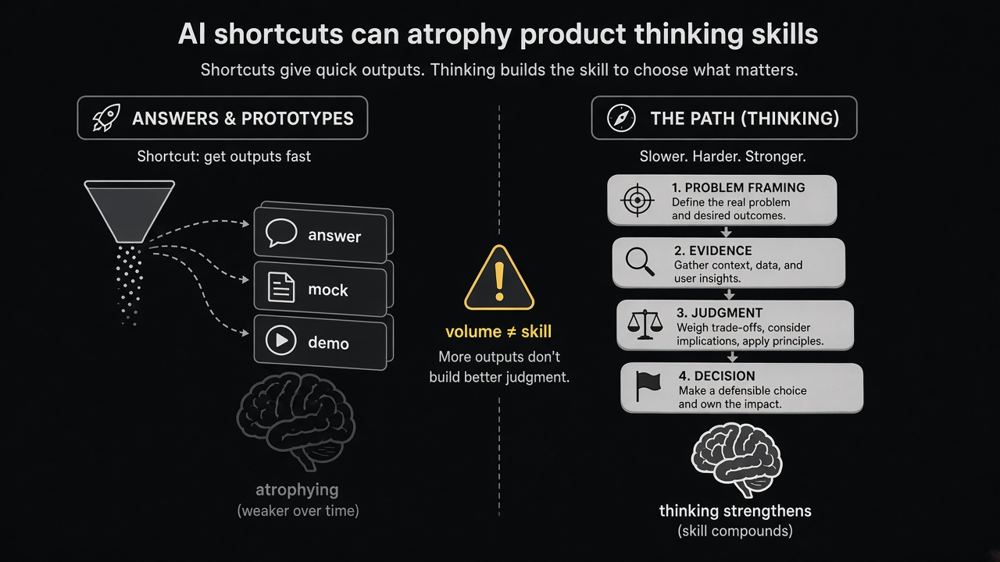

AI volume can atrophy the product path
Source: Shreyas Doshi (@shreyas)
original post
What it claims
Product teams are using AI to raise the volume of answers and prototypes — and often bypassing the thought process (the path) that builds judgment. More output can invite your own obsolescence if the craft of framing, evidence, and trade-offs never gets practiced.
Why it matters for a PO
POs are paid for decisions, not for how many stories or mocks they can emit. If AI drafts the PRD, the options, and the pitch while you only pick from the pile, your taste and problem-framing muscles thin out. Stakeholders will still ask why this bet over that one — volume of artifacts will not answer.
3 takeaways
- Volume of answers ≠ skill; the path (framing → evidence → judgment → decision) is the skill.
- Use AI to accelerate research and drafts, then force yourself to write the eigenquestion and the trade-off in your own words.
- If you cannot explain the path without the chat log, you did not own the decision — the tool did.
Practice this week
On your next discovery or epic brief, let AI draft freely — then close it. Rewrite in five bullets only: problem, evidence, options considered, trade-off you chose, what would change your mind. Bring those five bullets (not the AI draft) to the stakeholder review.